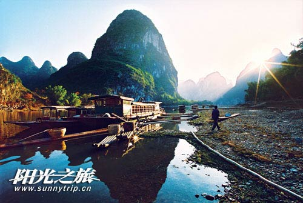
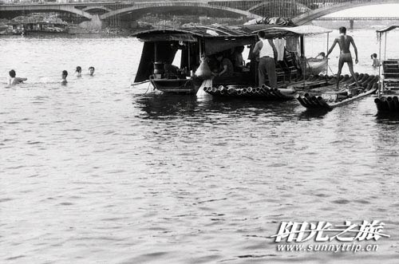
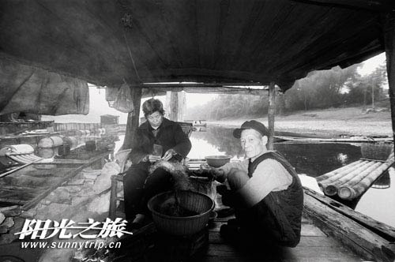
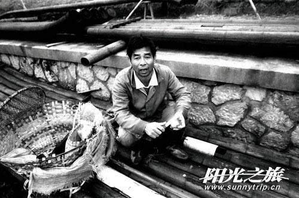
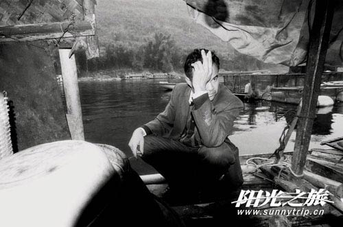
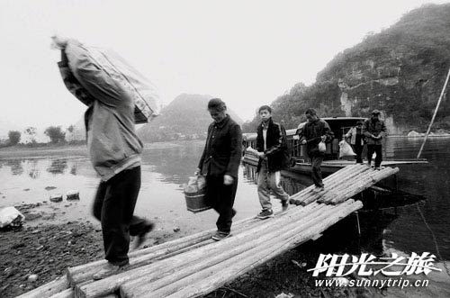

从华南之巅猫儿山发源的漓江，一路蜿转南下，流经桂林、阳朔的典型岩溶、峰林地貌形成山水甲天下的美景后，经梧州融入西江，至珠江出海。宽阔的水域，黄金的水道，温暖的气候，曾造就过辉煌的航运业，欣欣向荣的城镇，无数的人们以此为生。贩运货物，打鱼养家。
随着更便捷的陆路交通的飞速发展，旅游业的兴旺发达，环境污染的加剧，鱼类的减少，船家昔日的辉煌，已成为明日的黄花。
这些漓江最后的船家，今天生活得怎么样，带着这个问题，我们从桂林至阳朔，沿着漓江，走访了他们。

渔舟唱晚的诗意，是渔民勤劳的汗水和辛酸的泪
在桂林龙船坪附近的漓江边，有一片宽阔的水域，漓江的支流——美丽的桃花江在此汇入漓江。优良的避风港口，游刃有余的宽广水道，临近市区的繁华之地，从古至今，都是船家常年驻足停泊之处。
这里现在仍然长期停泊着三四十条渔船，他们分别由桂林籍的船家，兴坪、平乐籍的船家和江边安新洲以前的菜农三个群落组成。
桂林的船家停靠在临近南溪山附近的水域，他们现在只有四五家了。上世纪六十年代末、七十年代初，他们曾经响应陆上定居号召，成立漓江公社，上岸定居已三十年了。以拉板车，挖沙子等为生，已习惯陆上的生活。
2000年，桂林经过百年不遇的洪水洗礼后，开始大力整修沿江防洪堤坝。这些上岸船家的住房，因在拆迁之列，而被迫搬家。

一些家庭人口多、负担重，生活较贫困的船家，因补偿的拆迁费买的房子不够住，而又重新回到了船上，重操旧业，过起了逢河打鱼，逢水弯船的昨日生活。
黄初付、黄秋妹老人也非常烦恼，五个孩子，工作也不稳定，下岗的下岗，找工作的也很困难，自己又上了年纪，随着漓江鱼类越来越少（以前的100 多种鱼类，到现在的十几种），打鱼更困难了。长期的船上生活，落下了一身的风湿病。看着身边城市里的退休老人都有退休金在安度晚年。不知自己今后怎么办？
那些大多数从兴坪来的船家，在这里生活也有三四十年的时间了。他们已习惯了这里的生活，熟悉了这里的环境，年年都办着暂住证。有些人家还是祖孙三代同船。
兴坪船家有的上岸打工，有的捕鱼为生，有的为航运公司开游船。他们是最为吃苦耐劳的群体，停泊的水域也最差。常常在工厂、居民区的排污口边。由于自我保护意识差，长年使用这些污水，很多的老人都患有白内障、腰酸背痛、耳聋等疾病，又无钱治疗。他们告诉我，打鱼人的生活是一天管一天的，吃了上顿，不知下顿在哪里，而且上无片瓦，下无寸土。
安新洲菜农组成的船家，那是快乐而没有生存压力的群体。他们以前是菜农，在岸上有住房，有些人把住房出租了，买条船在漓江上居住，说江上的空气好、安静。平时用渔网围着，养些鸭子，在肥沃的洲子上种些蔬菜，过着悠闲的生活。有些年轻人，干脆在四面环水的小洲子上开茶庄，挣钱、混饭吃。

“福被千家古镇日新月异，利兴万代漓江水秀山明”的阳朔福利镇，像漓江边的大圩、杨堤、兴坪一样，是一个有着水乡特色的风景名胜区，镇南的大光码头对岸，至今仍是船家摇船摆渡，打鱼谋生的停泊之地，长年居住在此的水上人家有11户之多。
杨堤船家，怎样分享漓江旅游这块美味的蛋糕
在漓江旅游刚刚兴起不久，一些头脑灵活、聪明的船家，就利用闲暇时间，主动向过往游人兜揽游江生意，欢迎游客乘坐自己的渔船游览漓江。他们低廉的收费，热情的服务，富有南国特色的渔船——竹排、渔艇、圩船和鱼鹰，让爱玩的自助旅游者和学生们大为欣赏。
杨堤优良的深水码头，处于漓江风光精华地，位置得天独厚，历来都是船家运输、停泊、打鱼的好地方，一些船家从祖辈起就在岸上建有住房，他们的生活状况明显好于其他地方的船家。
近年，蓬勃兴起的漓江徒步游，是从杨堤至兴坪徒步游览漓江精华，全程20公里，行程4—5个小时，沿途须经过3个横水渡，6个自然村，沿途景点有浪石风光、下龙风光、九马画山和黄布倒影等。
徒步游，曾让杨堤的船家短暂地享受了一段美好时光。然而，由于在市场利润的分配上没有达成共识，终于形成互不妥协的矛盾，造成极其混乱的旅游秩序，从而最终被迫取消。

船家莫得贵是一位46岁的中年汉子，他的前妻病逝了，留下两个女儿。现在的妻子带着一个男孩嫁过来，组成一家五口人的家庭。两个女儿已长大成人，出外打工看世界去了。平常日子里他打鱼归来，妻子去镇上卖鱼，或修补渔网。儿子因幼时发高烧，落下了痴呆，做不了什么事。他的生活压力很大,对现在名目繁多的收费项目意见也很大。
我问船家莫得贵，想上岸居住吗？他说，当然想呢！人往高处走，水往低处流，人之常情。住在船上，连腰都直不起，冬天寒风阵阵吹，夏天闷热潮湿，蚊虫也特多，特别是天将黑时，黑鸦鸦的一大片，随手抓一大把的。可是岸上没有我们渔民的土地，怎么盖房子？1977年，随着漓江旅游业的兴起，因渔民拉纤运货行船太落后，也搞过陆上定居。可是每家才30平方米的定居面积，135元/人的上岸费，根本解决不了问题。我们渔民家庭人口多，不够住，只好又回到船上。

消失了的义渡，消失了的传统美德
漓江上的船家，除捕鱼运货为生外，还有另一个不可推卸的职责，就是在每一个行人众多的繁华码头，为来往行人摆渡。
在漓江上，有无数的码头实行义渡。义渡的兴起，已有1000多年的历史。现今，桂林的古老渡口，木龙古渡旁的山体石壁上，仍清晰可见，刻着清朝同治六年六月十一日示的设立义渡，普济行人的石刻，说明设立义渡的由来，和摆渡船家的生活用度由衙府开支的情况，及私渡客人收费用被点名批评的船家人员名单和惩治办法。
木龙古渡的义渡船家，都是由道德品质高尚，有公益心，令人敬服的人来担当。
在福利镇的大光码头，义渡实行到1980年才被取消。当时，是由对岸村里照顾家庭困难的村民来撑船，每个月村里每户人家出2斤大米给撑船人家，以供他的生活开支。

现在摆渡的是船家，每两户人家轮流开一天船，逢圩日过往人多时，六条船一起出动摆渡，当地人一般二角钱，对外地人不报价，随你给钱，或者要价一元。让外来人员总感到有一种被宰的感觉，心里不是滋味。
兴坪镇的义渡，实行到1995年。因船家违章超载，沉船出事，酿成悲剧后，由镇政府取消。义渡船家的日常生活开支，一直由镇政府支付。
走近这些漓江最后的船家，他们虽然生活得很艰辛，但是，笑容在他们沧桑的脸上总是荡漾着，那份浑然天成的豁达、超脱，让人深深地感动。打鱼玩耍，辞官不做。逢河打鱼，船上人占一半。他们这些常常挂在嘴边的口头禅，让我读懂了他们。